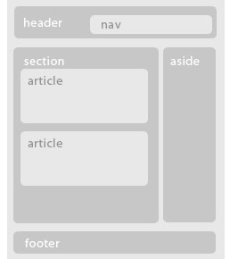

HTML5 Layout
semantic tag란? 태그의 의미와 알맞게 내용을 구성해야한다.
- header : 사이트 전체의 헤더, article태그의 헤더
- nav : 네비게이션 표현, header하위/aside하위/footer하위
- article : 본문내용. 독립적으로 표현가능한 단위.
- section : 연관된 컨텐츠를 그룹핑. article하위, 여러article을 묶는 용도
- aside : 본문내용과 별개인 부수적인 정보. 광고/달력/목록
- footer : 사이트하단부. 저작권정보, 주소/연락처등 정보

